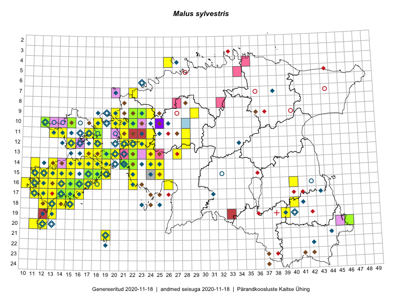

Malus sylvestris — mets-õunapuu
Kaardile koondatud taksonid: Malus sylvestris (L.) Mill. (235)

Kaart põhineb 235 kirjel, neist:
vaatlusi 215
eksemplare 20
Kaasaegsed1 leiukohad asuvad 82 ruudus.
Andmed “Eesti taimede levikuatlasest”,2 sulgudes ruutude arv:3
● 1971–2005 (126)
○ 1921–1970 (11)
△ kuni 1920 (1)
+ hävinud (0)
? kaheldav (0)
Lisaruudud teistest andmebaasidest:4
ELF: 2006– . . . (1)
PKÜ: 2006– . . . (8)
ELF: 1971–2005 (10)
PKÜ: 1997–2005 (29)
| Ruut | Vaatleja(d) | Vaatlusaeg | Kirje PlutoFis |
|---|---|---|---|
| 12-28 | Tiit Hallikma, Toomas Kukk, Indrek Tammekänd | 2015-06-09 | ruut/ala: Malus sylvestris (L.) Mill. |
| 15-18 | Toomas Kukk, Eerik Leibak | 2015-08-08 | ruut/ala: Malus sylvestris (L.) Mill. |
| 13-20 | Peedu Saar, Elle Roosaluste | 2015-07-12 | ruut/ala: Malus sylvestris (L.) Mill. |
| 14-21 | Toomas Kukk, Peedu Saar | 2014-07-03 | ruut/ala: Malus sylvestris (L.) Mill. |
| 18-40 | Malle Leht | 2015-05-12 | ruut/ala: Malus sylvestris (L.) Mill. |
| 19-39 | Malle Leht | 2015-07-08 | ruut/ala: Malus sylvestris (L.) Mill. |
| 16-10 | Peedu Saar | 2015-08-07 | ruut/ala: Malus sylvestris (L.) Mill. |
| 18-15 | Toomas Kukk | 2014-06-18 | ruut/ala: Malus sylvestris (L.) Mill. |
| 12-24 | Tiit Hallikma, Toomas Kukk | 2015-08-24 | ruut/ala: Malus sylvestris (L.) Mill. |
| 16-17 | Meeli Mesipuu, Kadri Tali | 2015-07-06 | ruut/ala: Malus sylvestris (L.) Mill. |
| 13-17 | Meeli Mesipuu, Kadri Tali | 2015-07-08 | ruut/ala: Malus sylvestris (L.) Mill. |
| 14-16 | Meeli Mesipuu | 2015-07-10 | ruut/ala: Malus sylvestris (L.) Mill. |
| 14-19 | Meeli Mesipuu | 2015-07-11 | ruut/ala: Malus sylvestris (L.) Mill. |
| 13-20 | Meeli Mesipuu | 2015-07-13 | ruut/ala: Malus sylvestris (L.) Mill. |
| 14-24 | Toomas Kukk, Ott Luuk, Sander Laherand | 2014-08-24 | ruut/ala: Malus sylvestris (L.) Mill. |
| 10-12 | Eeva-Maria Jeletsky, Tarmo Niitla | 2015-06-26 | ruut/ala: Malus sylvestris (L.) Mill. |
| 11-13 | Eeva-Maria Jeletsky, Tarmo Niitla | 2015-06-28 | ruut/ala: Malus sylvestris (L.) Mill. |
| 11-17 | Eeva-Maria Jeletsky, Tarmo Niitla | 2015-06-17 | ruut/ala: Malus sylvestris (L.) Mill. |
| 12-22 | Ott Luuk, Peedu Saar | 2015-08-24 | ruut/ala: Malus sylvestris (L.) Mill. |
| 17-13 | Triin Reitalu, Mari Reitalu | 2015-05-18 | ruut/ala: Malus sylvestris (L.) Mill. |
| 19-13 | Oliver Parrest | 2015-07-01 | ruut/ala: Malus sylvestris (L.) Mill. |
| 16-11 | Mari Reitalu | 2015-05-22 | ruut/ala: Malus sylvestris (L.) Mill. |
| 15-12 | Mari Reitalu | 2014-07-31 | ruut/ala: Malus sylvestris (L.) Mill. |
| 20-11 | Mari Reitalu, Triin Reitalu | 2014-08-15 | ruut/ala: Malus sylvestris (L.) Mill. |
| 17-12 | Mari Reitalu | 2014-09-02 | ruut/ala: Malus sylvestris (L.) Mill. |
| 15-19 | Meeli Mesipuu | 2015-06-21 | ruut/ala: Malus sylvestris (L.) Mill. |
| 17-12 | Mari Reitalu | 2015-06-19 | ruut/ala: Malus sylvestris (L.) Mill. |
| 15-25 | Maret Gerz, Leena Gerz | 2015-08-08 | ruut/ala: Malus sylvestris (L.) Mill. |
| 17-12 | Mari Reitalu | 2015-06-07 | ruut/ala: Malus sylvestris (L.) Mill. |
| 19-13 | Oliver Parrest | 2015-05-20 | ruut/ala: Malus sylvestris (L.) Mill. |
| 17-14 | Mari Reitalu, Sirje Azarov | 2015-05-09 | ruut/ala: Malus sylvestris (L.) Mill. |
| 16-12 | Mari Reitalu, Triin Reitalu | 2015-04-15 | ruut/ala: Malus sylvestris (L.) Mill. |
| 16-12 | Mari Reitalu | 2015-08-23 | ruut/ala: Malus sylvestris (L.) Mill. |
| 13-19 | Meeli Mesipuu, Kadri Tali | 2015-06-24 | ruut/ala: Malus sylvestris (L.) Mill. |
| 17-13 | Mari Reitalu, Oliver Parrest | 2015-08-12 | ruut/ala: Malus sylvestris (L.) Mill. |
| 14-13 | Mari Reitalu, Oliver Parrest | 2015-05-14 | ruut/ala: Malus sylvestris (L.) Mill. |
| 16-13 | Mari Reitalu, Oliver Parrest | 2015-07-27 | ruut/ala: Malus sylvestris (L.) Mill. |
| 18-12 | Mari Reitalu, Oliver Parrest | 2015-05-22 | ruut/ala: Malus sylvestris (L.) Mill. |
| 15-13 | Mari Reitalu, Oliver Parrest | 2015-05-14 | ruut/ala: Malus sylvestris (L.) Mill. |
| 17-12 | Mari Reitalu, Triin Reitalu | 2015-07-22 | ruut/ala: Malus sylvestris (L.) Mill. |
| 21-19 | Oliver Parrest | 2015-05-29 | ruut/ala: Malus sylvestris (L.) Mill. |
| 14-11 | Mari Reitalu, Triin Reitalu | 2015-05-24 | ruut/ala: Malus sylvestris (L.) Mill. |
| 14-16 | Mari Reitalu, Sirje Azarov | 2015-05-09 | ruut/ala: Malus sylvestris (L.) Mill. |
| 18-15 | Oliver Parrest | 2015-05-23 | ruut/ala: Malus sylvestris (L.) Mill. |
| 15-11 | Mari Reitalu, Oliver Parrest | 2015-07-16 | ruut/ala: Malus sylvestris (L.) Mill. |
| 20-12 | Mari Reitalu, Oliver Parrest | 2015-05-26 | ruut/ala: Malus sylvestris (L.) Mill. |
| 16-18 | Mari Reitalu, Sirje Azarov | 2015-05-16 | ruut/ala: Malus sylvestris (L.) Mill. |
| 15-19 | Mari Reitalu, Sirje Azarov | 2015-05-16 | ruut/ala: Malus sylvestris (L.) Mill. |
| 18-13 | Mari Reitalu, Oliver Parrest | 2015-05-27 | ruut/ala: Malus sylvestris (L.) Mill. |
| 16-11 | Mari Reitalu, Triin Reitalu | 2015-05-28 | ruut/ala: Malus sylvestris (L.) Mill. |
| 17-11 | Mari Reitalu, Triin Reitalu | 2015-05-08 | ruut/ala: Malus sylvestris (L.) Mill. |
| 16-11 | Triin Reitalu, Mari Reitalu | 2015-08-09 | ruut/ala: Malus sylvestris (L.) Mill. |
| 17-11 | Mari Reitalu, Triin Reitalu | 2015-05-19 | ruut/ala: Malus sylvestris (L.) Mill. |
| 16-11 | Sirje Azarov, Mari Reitalu | 2015-05-23 | ruut/ala: Malus sylvestris (L.) Mill. |
| 16-12 | Mari Reitalu, Triin Reitalu | 2015-04-30 | ruut/ala: Malus sylvestris (L.) Mill. |
| 16-26 | Meeli Mesipuu | 2015-06-27 | ruut/ala: Malus sylvestris (L.) Mill. |
| 12-23 | Thea Kull, Eerik Leibak | 2015-08-26 | ruut/ala: Malus sylvestris (L.) Mill. |
| 15-15 | Karin Kikas, Elle Rajandu | 2015-07-23 | ruut/ala: Malus sylvestris (L.) Mill. |
| 18-14 | Mari Reitalu, Triin Reitalu | 2014-07-17 | ruut/ala: Malus sylvestris (L.) Mill. |
| 15-18 | Karin Kikas, Elle Rajandu | 2015-07-24 | ruut/ala: Malus sylvestris (L.) Mill. |
| 16-14 | Karin Kikas, Elle Rajandu | 2015-07-20 | ruut/ala: Malus sylvestris (L.) Mill. |
| 16-15 | Karin Kikas, Elle Rajandu | 2015-07-20 | ruut/ala: Malus sylvestris (L.) Mill. |
| 17-14 | Karin Kikas, Elle Rajandu | 2015-07-22 | ruut/ala: Malus sylvestris (L.) Mill. |
| 13-19 | Kadri Tali | 2015-06-03 | ruut/ala: Malus sylvestris (L.) Mill. |
| 10-20 | Ott Luuk, Peedu Saar | 2014-07-29 | ruut/ala: Malus sylvestris (L.) Mill. |
| 16-11 | Mari Reitalu, Triin Reitalu | 2015-08-09 | ruut/ala: Malus sylvestris (L.) Mill. |
| 10-22 | Tõnu Ploompuu | 2015-08-21 | ruut/ala: Malus sylvestris (L.) Mill. |
| 12-22 | Ott Luuk, Tiit Hallikma | 2016-05-14 | ruut/ala: Malus sylvestris (L.) Mill. |
| 04-26 | Peedu Saar, Thea Kull | 2016-05-25 | ruut/ala: Malus sylvestris (L.) Mill. |
| 09-24 | Tõnu Ploompuu, Sirje Lagle | 2015-08-18 | ruut/ala: Malus sylvestris (L.) Mill. |
| 09-22 | Sirje Lagle, Tõnu Ploompuu | 2015-05-15 | ruut/ala: Malus sylvestris (L.) Mill. |
| 10-21 | Tõnu Ploompuu | 2015-05-02 | ruut/ala: Malus sylvestris (L.) Mill. |
| 10-21 | Tõnu Ploompuu | 2015-08-21 | ruut/ala: Malus sylvestris (L.) Mill. |
| 10-22 | Tõnu Ploompuu | 2015-05-20 | ruut/ala: Malus sylvestris (L.) Mill. |
| 14-24 | Thea Kull | 2016-06-21 | ruut/ala: Malus sylvestris (L.) Mill. |
| 13-24 | Indrek Tammekänd, Jana Galadi | 2016-05-17 | ruut/ala: Malus sylvestris (L.) Mill. |
| 09-29 | Toomas Kukk, Sander Laherand | 2016-07-06 | ruut/ala: Malus sylvestris (L.) Mill. |
| 14-21 | Mari Reitalu, Oliver Parrest | 2016-07-04 | ruut/ala: Malus sylvestris (L.) Mill. |
| 14-22 | Mari Reitalu, Oliver Parrest | 2016-07-04 | ruut/ala: Malus sylvestris (L.) Mill. |
| 17-14 | Toomas Kukk, Meeli Mesipuu, Johannes Kõdar | 2016-08-11 | ruut/ala: Malus sylvestris (L.) Mill. |
| 11-21 | Aat Sarv, Maret Gerz | 2016-07-07 | ruut/ala: Malus sylvestris (L.) Mill. |
| 11-14 | Peedu Saar, Thea Kull | 2016-08-09 | ruut/ala: Malus sylvestris (L.) Mill. |
| 12-15 | Toomas Kukk, Meeli Mesipuu | 2016-08-10 | ruut/ala: Malus sylvestris (L.) Mill. |
| 16-22 | Timo Luhamäe, Peedu Saar | 2016-07-04 | punkt: Malus sylvestris (L.) Mill. |
| 07-22 | Mari Reitalu, Eerik Leibak | 2016-07-07 | ruut/ala: Malus sylvestris (L.) Mill. |
| 12-22 | Mari Reitalu, Oliver Parrest | 2016-07-05 | ruut/ala: Malus sylvestris (L.) Mill. |
| 13-19 | Mari Reitalu, Sirje Azarov | 2016-08-16 | ruut/ala: Malus sylvestris (L.) Mill. |
| 15-18 | Mari Reitalu, Hannes Pehlak | 2016-08-26 | ruut/ala: Malus sylvestris (L.) Mill. |
| 18-14 | Ott Luuk | 2016-08-30 | ruut/ala: Malus sylvestris (L.) Mill. |
| 14-13 | Toomas Kukk, Meeli Mesipuu, Mari Reitalu | 2016-10-06 | ruut/ala: Malus sylvestris (L.) Mill. |
| 14-19 | Meeli Mesipuu | 2016-06-29 | ruut/ala: Malus sylvestris (L.) Mill. |
| 17-13 | Ott Luuk, Peedu Saar | 2016-10-08 | ruut/ala: Malus sylvestris (L.) Mill. |
| 14-17 | Ott Luuk, Peedu Saar | 2016-08-29 | ruut/ala: Malus sylvestris (L.) Mill. |
| 15-22 | Meeli Mesipuu, Sirje Azarov | 2016-07-04 | ruut/ala: Malus sylvestris (L.) Mill. |
| 09-20 | Kadi-Liis Kesler | 2015-06-25 | ruut/ala: Malus sylvestris (L.) Mill. |
| 14-21 | Toomas Kukk | 2013-06-29 | ruut/ala: Malus sylvestris (L.) Mill. |
| 17-11 | Mari Reitalu, Triin Reitalu | 2013-06-13 | ruut/ala: Malus sylvestris (L.) Mill. |
| 15-14 | Mari Reitalu | 2008-07-10 | ruut/ala: Malus sylvestris (L.) Mill. |
| 17-15 | Mari Reitalu | 2006-09-12 | ruut/ala: Malus sylvestris (L.) Mill. |
| 17-15 | Mari Reitalu | 2006-09-12 | ruut/ala: Malus sylvestris (L.) Mill. |
| 16-16 | Mari Reitalu | 2006-07-13 | ruut/ala: Malus sylvestris (L.) Mill. |
| 16-18 | Mari Reitalu | 2006-08-06 | ruut/ala: Malus sylvestris (L.) Mill. |
| 17-11 | Mari Reitalu | 2006-06-06 | ruut/ala: Malus sylvestris (L.) Mill. |
| 14-18 | Mari Reitalu | 2008-08-28 | ruut/ala: Malus sylvestris (L.) Mill. |
| 18-12 | Mari Reitalu | 2008-11-20 | ruut/ala: Malus sylvestris (L.) Mill. |
| 14-13 | Mari Reitalu | 2008-07-28 | ruut/ala: Malus sylvestris (L.) Mill. |
| 16-18 | Mari Reitalu | 2006-05-20 | ruut/ala: Malus sylvestris (L.) Mill. |
| 18-14 | Mari Reitalu | 2008-09-04 | ruut/ala: Malus sylvestris (L.) Mill. |
| 16-16 | Mari Reitalu | 2008-05-23 | ruut/ala: Malus sylvestris (L.) Mill. |
| 16-16 | Mari Reitalu | 2008-07-04 | ruut/ala: Malus sylvestris (L.) Mill. |
| 17-14 | Mari Reitalu | 2008-05-29 | ruut/ala: Malus sylvestris (L.) Mill. |
| 15-17 | Mari Reitalu | 2008-07-03 | ruut/ala: Malus sylvestris (L.) Mill. |
| 17-16 | Mari Reitalu | 2009-08-08 | ruut/ala: Malus sylvestris (L.) Mill. |
| 17-15 | Mari Reitalu | 2009-08-27 | ruut/ala: Malus sylvestris (L.) Mill. |
| 16-17 | Mari Reitalu | 2008-07-08 | ruut/ala: Malus sylvestris (L.) Mill. |
| 16-16 | Mari Reitalu | 2008-08-29 | ruut/ala: Malus sylvestris (L.) Mill. |
| 14-19 | Mari Reitalu | 2007-05-03 | ruut/ala: Malus sylvestris (L.) Mill. |
| 15-11 | Mari Reitalu | 2007-09-12 | ruut/ala: Malus sylvestris (L.) Mill. |
| 15-11 | Mari Reitalu | 2007-05-31 | ruut/ala: Malus sylvestris (L.) Mill. |
| 17-11 | Mari Reitalu | 2007-09-07 | ruut/ala: Malus sylvestris (L.) Mill. |
| 16-11 | Mari Reitalu | 2007-08-09 | ruut/ala: Malus sylvestris (L.) Mill. |
| 16-11 | Mari Reitalu | 2007-06-10 | ruut/ala: Malus sylvestris (L.) Mill. |
| 15-11 | Mari Reitalu | 2006-09-19 | ruut/ala: Malus sylvestris (L.) Mill. |
| 14-21 | Toomas Kukk | 2008-07-03 | ruut/ala: Malus sylvestris (L.) Mill. |
| 14-21 | Toomas Kukk | 2009-06-07 | ruut/ala: Malus sylvestris (L.) Mill. |
| 14-21 | Toomas Kukk | 2009-06-07 | ruut/ala: Malus sylvestris (L.) Mill. |
| 14-21 | Toomas Kukk, Ott Luuk | 2009-06-29 | ruut/ala: Malus sylvestris (L.) Mill. |
| 14-21 | Toomas Kukk, Ott Luuk | 2009-06-29 | ruut/ala: Malus sylvestris (L.) Mill. |
| 11-18 | Toomas Kukk, Peeter Pärn | 2017-06-15 | ruut/ala: Malus sylvestris (L.) Mill. |
| 12-18 | Toomas Kukk, Peeter Pärn | 2017-09-09 | ruut/ala: Malus sylvestris (L.) Mill. |
| 12-15 | Ott Luuk, Toomas Kukk, Peedu Saar, Sander Laherand | 2017-06-30 | ruut/ala: Malus sylvestris (L.) Mill. |
| 14-25 | Peedu Saar, Toomas Kukk | 2017-09-06 | ruut/ala: Malus sylvestris (L.) Mill. |
| 15-18 | Toomas Kukk, Eerik Leibak | 2015-08-08 | punkt: Malus sylvestris (L.) Mill. |
| 13-27 | Toomas Kukk, Indrek Tammekänd | 2015-05-09 | punkt: Malus sylvestris (L.) Mill. |
| 13-20 | Peedu Saar, Elle Roosaluste | 2015-07-12 | punkt: Malus sylvestris (L.) Mill. |
| 12-22 | Toomas Kukk, Tiit Hallikma | 2015-08-27 | punkt: Malus sylvestris (L.) Mill. |
| 16-10 | Peedu Saar | 2015-08-07 | punkt: Malus sylvestris (L.) Mill. |
| 12-24 | Tiit Hallikma, Toomas Kukk | 2015-08-24 | punkt: Malus sylvestris (L.) Mill. |
| 14-19 | Meeli Mesipuu | 2015-07-11 | punkt: Malus sylvestris (L.) Mill. |
| 13-20 | Meeli Mesipuu | 2015-07-13 | punkt: Malus sylvestris (L.) Mill. |
| 10-22 | Toomas Kukk, Thea Kull | 2014-08-21 | punkt: Malus sylvestris (L.) Mill. |
| 14-24 | Toomas Kukk, Ott Luuk, Sander Laherand | 2014-08-24 | punkt: Malus sylvestris (L.) Mill. |
| 14-24 | Indrek Tammekänd | 2015-06-04 | punkt: Malus sylvestris (L.) Mill. |
| 15-22 | Indrek Tammekänd, Jana Galadi | 2015-06-03 | punkt: Malus sylvestris (L.) Mill. |
| 15-22 | Vilma Kuusk, Indrek Tammekänd | 2015-06-30 | punkt: Malus sylvestris (L.) Mill. |
| 11-13 | Eeva-Maria Jeletsky, Tarmo Niitla | 2015-06-28 | punkt: Malus sylvestris (L.) Mill. |
| 11-17 | Eeva-Maria Jeletsky, Tarmo Niitla | 2015-06-17 | punkt: Malus sylvestris (L.) Mill. |
| 12-22 | Ott Luuk, Peedu Saar | 2015-08-24 | punkt: Malus sylvestris (L.) Mill. |
| 17-13 | Triin Reitalu, Mari Reitalu | 2015-05-18 | punkt: Malus sylvestris (L.) Mill. |
| 16-11 | Mari Reitalu | 2015-05-22 | punkt: Malus sylvestris (L.) Mill. |
| 15-19 | Meeli Mesipuu | 2015-06-21 | punkt: Malus sylvestris (L.) Mill. |
| 17-12 | Mari Reitalu | 2015-06-19 | punkt: Malus sylvestris (L.) Mill. |
| 15-25 | Maret Gerz, Leena Gerz | 2015-08-08 | punkt: Malus sylvestris (L.) Mill. |
| 17-12 | Mari Reitalu, Triin Reitalu | 2015-07-22 | punkt: Malus sylvestris (L.) Mill. |
| 14-11 | Mari Reitalu, Triin Reitalu | 2015-05-25 | punkt: Malus sylvestris (L.) Mill. |
| 16-18 | Mari Reitalu, Sirje Azarov | 2015-05-16 | punkt: Malus sylvestris (L.) Mill. |
| 15-19 | Mari Reitalu, Sirje Azarov | 2015-05-16 | punkt: Malus sylvestris (L.) Mill. |
| 17-14 | Mari Reitalu, Sirje Azarov | 2015-05-09 | punkt: Malus sylvestris (L.) Mill. |
| 16-11 | Triin Reitalu, Mari Reitalu | 2015-08-09 | punkt: Malus sylvestris (L.) Mill. |
| 16-11 | Sirje Azarov, Mari Reitalu | 2015-05-23 | punkt: Malus sylvestris (L.) Mill. |
| 16-13 | Mari Reitalu, Oliver Parrest | 2015-07-27 | punkt: Malus sylvestris (L.) Mill. |
| 17-14 | Elle Rajandu, Karin Kikas | 2015-07-22 | punkt: Malus sylvestris (L.) Mill. |
| 16-15 | Elle Rajandu, Karin Kikas | 2015-07-20 | punkt: Malus sylvestris (L.) Mill. |
| 16-15 | Elle Rajandu, Karin Kikas | 2015-07-20 | punkt: Malus sylvestris (L.) Mill. |
| 16-15 | Elle Rajandu, Karin Kikas | 2015-07-20 | punkt: Malus sylvestris (L.) Mill. |
| 16-14 | Karin Kikas, Elle Rajandu | 2015-07-20 | punkt: Malus sylvestris (L.) Mill. |
| 15-18 | Elle Rajandu, Karin Kikas | 2015-07-24 | punkt: Malus sylvestris (L.) Mill. |
| 15-15 | Karin Kikas, Elle Rajandu | 2015-07-23 | punkt: Malus sylvestris (L.) Mill. |
| 16-12 | Triin Reitalu, Mari Reitalu | 2015-04-30 | punkt: Malus sylvestris (L.) Mill. |
| 16-11 | Triin Reitalu, Mari Reitalu | 2015-05-28 | punkt: Malus sylvestris (L.) Mill. |
| 21-19 | Oliver Parrest | 2015-05-29 | punkt: Malus sylvestris (L.) Mill. |
| 20-12 | Oliver Parrest, Mari Reitalu | 2015-05-26 | punkt: Malus sylvestris (L.) Mill. |
| 18-13 | Oliver Parrest, Mari Reitalu | 2015-05-27 | punkt: Malus sylvestris (L.) Mill. |
| 18-12 | Oliver Parrest, Mari Reitalu | 2015-05-22 | punkt: Malus sylvestris (L.) Mill. |
| 04-26 | Thea Kull, Peedu Saar | 2016-05-25 | punkt: Malus sylvestris (L.) Mill. |
| 04-26 | Thea Kull, Peedu Saar | 2016-05-25 | punkt: Malus sylvestris (L.) Mill. |
| 14-24 | Thea Kull | 2016-06-21 | punkt: Malus sylvestris (L.) Mill. |
| 10-18 | Toomas Kukk, Sander Laherand | 2016-07-07 | punkt: Malus sylvestris (L.) Mill. |
| 10-18 | Toomas Kukk, Sander Laherand | 2016-07-07 | punkt: Malus sylvestris (L.) Mill. |
| 15-22 | Indrek Tammekänd | 2016-06-14 | punkt: Malus sylvestris (L.) Mill. |
| 14-24 | Thea Kull | 2016-06-21 | punkt: Malus sylvestris (L.) Mill. |
| 09-29 | Sander Laherand, Toomas Kukk | 2016-07-06 | punkt: Malus sylvestris (L.) Mill. |
| 15-22 | Sirje Azarov, Meeli Mesipuu | 2016-07-04 | punkt: Malus sylvestris (L.) Mill. |
| 11-14 | Thea Kull, Peedu Saar | 2016-08-09 | punkt: Malus sylvestris (L.) Mill. |
| 11-21 | Maret Gerz, Aat Sarv | 2016-07-07 | punkt: Malus sylvestris (L.) Mill. |
| 13-19 | Sirje Azarov, Mari Reitalu | 2016-08-16 | punkt: Malus sylvestris (L.) Mill. |
| 13-20 | Sirje Azarov, Mari Reitalu | 2016-08-17 | punkt: Malus sylvestris (L.) Mill. |
| 15-18 | Mari Reitalu, Hannes Pehlak | 2016-08-26 | punkt: Malus sylvestris (L.) Mill. |
| 14-21 | Mari Reitalu, Oliver Parrest | 2016-07-04 | punkt: Malus sylvestris (L.) Mill. |
| 14-22 | Mari Reitalu, Oliver Parrest | 2016-07-04 | punkt: Malus sylvestris (L.) Mill. |
| 12-22 | Mari Reitalu, Oliver Parrest | 2016-07-05 | punkt: Malus sylvestris (L.) Mill. |
| 14-17 | Peedu Saar, Ott Luuk | 2016-08-29 | punkt: Malus sylvestris (L.) Mill. |
| 18-14 | Ott Luuk | 2016-08-30 | punkt: Malus sylvestris (L.) Mill. |
| 14-13 | Toomas Kukk, Meeli Mesipuu, Mari Reitalu | 2016-10-06 | punkt: Malus sylvestris (L.) Mill. |
| 17-13 | Peedu Saar, Ott Luuk | 2016-10-08 | punkt: Malus sylvestris (L.) Mill. |
| 14-19 | Meeli Mesipuu | 2016-06-29 | punkt: Malus sylvestris (L.) Mill. |
| 17-14 | Meeli Mesipuu, Toomas Kukk, Johannes Kõdar | 2016-08-11 | punkt: Malus sylvestris (L.) Mill. |
| 16-15 | Meeli Mesipuu, Virve Sõber | 2012-06-08 | punkt: Malus sylvestris (L.) Mill. |
| 12-21 | Rein Kalamees, Liina Oja | 2016-07-08 | punkt: Malus sylvestris (L.) Mill. |
| 09-24 | Tõnu Ploompuu, Sirje Lagle | 2015-08-18 | punkt: Malus sylvestris (L.) Mill. |
| 10-21 | Tõnu Ploompuu | 2015-08-21 | punkt: Malus sylvestris (L.) Mill. |
| 09-22 | Tõnu Ploompuu, Sirje Lagle | 2015-05-15 | punkt: Malus sylvestris (L.) Mill. |
| 09-20 | Kadi-Liis Kesler | 2015-09-15 | punkt: Malus sylvestris (L.) Mill. |
| 12-18 | Toomas Kukk | 2017-09-09 | punkt: Malus sylvestris (L.) Mill. |
| 11-13 | Toomas Kukk, Indrek Tammekänd | 2017-09-12 | punkt: Malus sylvestris (L.) Mill. |
| 14-25 | Peedu Saar, Toomas Kukk | 2017-09-06 | punkt: Malus sylvestris (L.) Mill. |
| 14-21 | Toomas Kukk | 2009-06-06 | ruut/ala: Malus sylvestris (L.) Mill. |
| 11-28 | Ott Luuk, Sander Laherand | 2013-06-19 | punkt: Malus sylvestris (L.) Mill. |
| 09-23 | Toomas Kukk, Timo Luhamäe | 2012-07-11 | punkt: Malus sylvestris (L.) Mill. |
| 15-19 | Mari Reitalu, Sirje Azarov, Maris Sepp | 2018-05-23 | ruut/ala: Malus sylvestris (L.) Mill. |
| 13-18 | Toomas Kukk, Ilmar Uibopuu | 2018-05-26 | punkt: Malus sylvestris (L.) Mill. |
| 14-24 | Peedu Saar, Toomas Kukk, Ott Luuk, Kersti Tambets, Sten Mander | 2018-08-17 | ruut/ala: Malus sylvestris (L.) Mill. |
| 12-22 | Peedu Saar, Toomas Kukk, Ott Luuk, Kersti Tambets, Sten Mander | 2018-08-17 | ruut/ala: Malus sylvestris (L.) Mill. |
| 14-15 | Mari Reitalu | 2006-07-07 | ruut/ala: Malus sylvestris (L.) Mill. |
| 15-17 | Mari Reitalu, Sirje Azarov, Triin Reitalu | 2019-05-01 | ruut/ala: Malus sylvestris (L.) Mill. |
| 14-21 | Kai Vellak | 2016-06-28 | TU283345: Malus sylvestris (L.) Mill. |
| 17-14 | Kalle Kõllamaa | 2014-06-28 | TALL A010438: Malus sylvestris (L.) Mill. |
| 15-17 | Peedu Saar, Toomas Kukk | 2016-08-13 | TAA0133944: Malus sylvestris (L.) Mill. |
| 10-15 | Toomas Kukk | 2012-08-14 | TAA0112436: Malus sylvestris (L.) Mill. |
| 09-23 | Toomas Kukk | 2012-07-11 | TAA0112532: Malus sylvestris (L.) Mill. |
| 10-12 | Eeva-Maria Jeletsky, Tarmo Niitla | 2015-06-26 | TAA0119195: Malus sylvestris (L.) Mill. |
| 09-23 | Ott Luuk, Tiit Hallikma | 2016-05-13 | TAA0139034: Malus sylvestris (L.) Mill. |
| 14-22 | Toomas Kukk | 2014-08-16 | TAA0113384: Malus sylvestris (L.) Mill. |
| 13-22 | Renata Sõukand | 2014-07-27 | TAA0118568: Malus sylvestris (L.) Mill. |
| 13-19 | Renata Sõukand | 2014-08-30 | TAA0119816: Malus sylvestris (L.) Mill. |
| 13-19 | Renata Sõukand | 2014-08-30 | TAA0119817: Malus sylvestris (L.) Mill. |
| 11-18 | Toomas Kukk | 2017-06-15 | TAA0142219: Malus sylvestris (L.) Mill. |
| 11-18 | Toomas Kukk | 2017-06-15 | TAA0142220: Malus sylvestris (L.) Mill. |
| 14-21 | Toomas Kukk | 2018-10-05 | TAA0147112: Malus sylvestris (L.) Mill. |
| 15-18 | Toomas Kukk | 2018-10-05 | TAA0147113: Malus sylvestris (L.) Mill. |
| 15-37 | Lauri Mällo | 2019-06-13 | JPGH19455: Malus sylvestris (L.) Mill. |
| 14-21 | Toomas Kukk, Peedu Saar | 2019-09-25 | TAA0148430: Malus sylvestris (L.) Mill. |
| 10-22 | Toomas Kukk, Peedu Saar | 2019-09-19 | TAA0148457: Malus sylvestris (L.) Mill. |
| 14-21 | Peedu Saar, Ott Luuk, Tiit Hallikma, Toomas Kukk | 2019-06-18 | TAA0149671: Malus sylvestris (L.) Mill. |
| 09-22 | Peedu Saar | 2019-08-16 | TAA0149692: Malus sylvestris (L.) Mill. |
Kaasaegsed leiukohad (tähistatud värvitud ruutudega) põhinevad peamiselt 2014–2019 välitööandmetel. Väiksemal määral on andmebaasi kantud vanemaid leiuandmeid aastatest 2006–2013.↩︎
Kukk, T., Kull, T., Eesti taimede levikuatlas. Eesti Maaülikool, Põllumajandus- ja Keskkonnainstituut, Tartu, 2005.↩︎
NB! 2005. aasta atlase andmestikus katavad uuemad leiud vanemaid. Näiteks kui liik on ruudus registreeritud 1971–2005, siis pole võimalik öelda, kas ta oli sellest ruudust teada ka enne 1970. aastat. Vana atlase andmetel hävinud ja kaheldavaid leiukohti pole hilisemate (taas)leidude põhjal korrigeeritud.↩︎
Eestimaa Looduse Fondi (ELF) ja Pärandkoosluste Kaitse Ühingu (PKÜ) andmebaasid sisaldavad inventeeritud koosluste kirjeldusi ja liigiloendeid. Neist andmekogudest on kaardile lisatud lisatud vaid need ruudud, millest uue atlase andmekogus taksoni kohta kirjeid veel pole. Kõrvale on jäetud teadaolevalt kaheldavad määrangud. Kaartidel katavad uuema perioodi andmed vanemaid, PKÜ omad ELFi omi. Kattumise tõttu võib kaardil näha olla vähem mingi kategooria ruute kui legendis olev arv näitab. ELFi ja PKÜ andmed ei kajastu hetkel vaatluste tabelis ega ruutude liigiloendites.↩︎